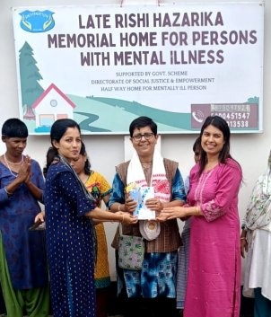

Click any photo below to enlarge, view background story, and sponsor meals directly for that cause.





Upholding spiritual purity, strict nutritional hygiene, and rapid disaster readiness in every meal served.
A compassionate hunger-relief initiative under Hare Krishna Movement Guwahati (spiritually mentored by ISKCON Bangalore). We operate hospital kiosks at AIIMS Guwahati, Guwahati Medical College & Hospital (GMCH), and Dr. B. Borooah Cancer Institute (BBCI) so no family member camping by a bedside goes hungry.
Cooked with 100% farm-fresh produce, pure mustard oil, and healing herbs without onion or garlic in FSSAI-compliant steam cauldrons. Sanctified by offering with love to Lord Sri Krishna at our North Guwahati temple altar, turning every plate into transcendental medicine.
When Brahmaputra floods submerge rural districts, our emergency taskforce deploys motorized rescue boats to deliver freshly cooked nutritious meals, safe potable water, and life-saving dry rations to marooned families stranded on embankments and rooftops.
Scaling from 3,000 to 10,000+ meals daily and establishing permanent hygienic food kiosks across more district civil and cancer hospitals to ensure continuous nutritional support for caregivers throughout Assam.